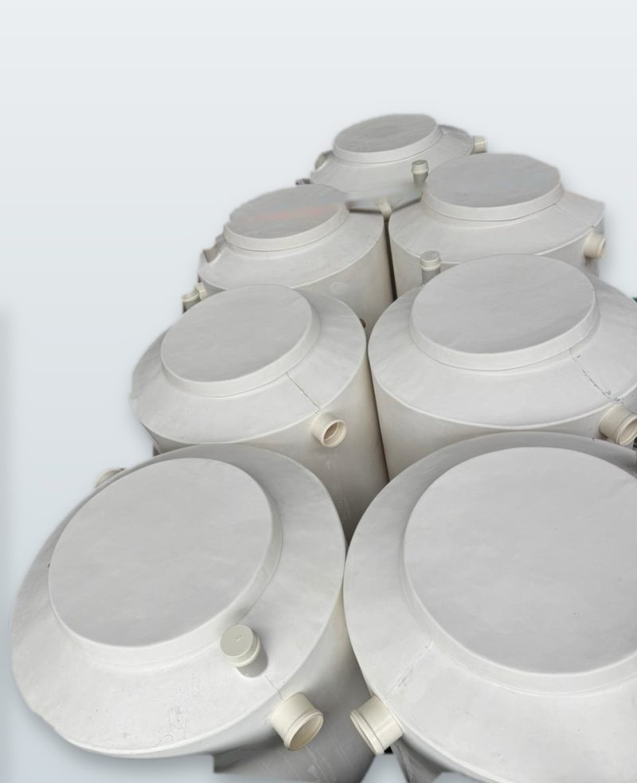

Início › Produtos › Biodigestor SB 1200
Biodigestor SB 1200
Biodigestor em fibra de vidro (PRFV) para tratamento de esgoto.
- Atende famílias de até 5 pessoas
- Fabricado em PRFV: resistente à corrosão e leve para transportar
- Fabricação própria na fábrica da SANEAR em Benevides (PA)
Biodigestores SANEAR

Quer um biodigestor SB 1200?
Pedir orçamento pelo WhatsApp